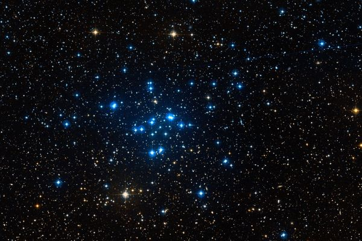
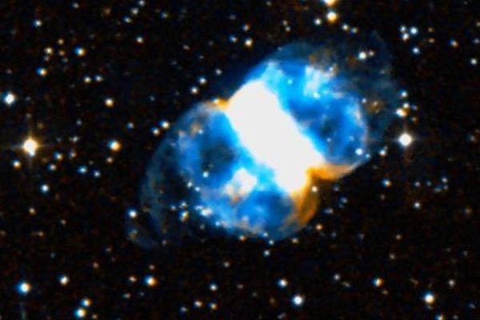

Латинское название: Perseus
Персей - сын Зевса и Данаи, убивший Медузу Горгону и, наоборот, спасший Андромеду.
Медуза Горгона была, как известно, столь ужасна, что каждый, кто на нее смотрел мгновенно превращался в камень. Персей отрубил голову чудовищу, глядя в до блеску начищенный щит. Перенесенный на небо, Персей держит отсеченную голову в руке, а звезда, горящая в мертвом глазу Горгоны, меняет свой блеск - это переменная звезда Алголь.
Интересно, древние наблюдатели неба знали о переменности Алголя или это случайное, но символичное совпадение?
Рассеянное звездное скопление. Различимо в бинокль.
(M 76) Планетарная туманность - сброшенная оболочка активной звезды. Названа гантелью за характерную форму: ну да, есть еще просто Гантель - в Лисичке.
